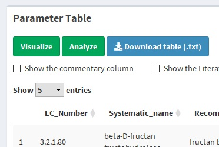
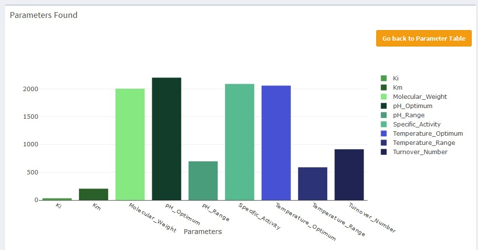
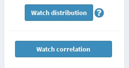
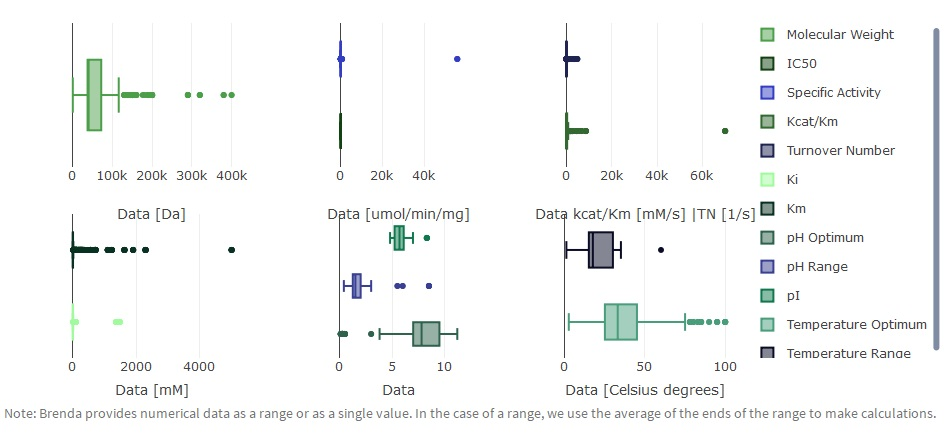
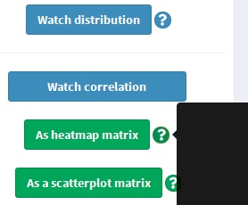
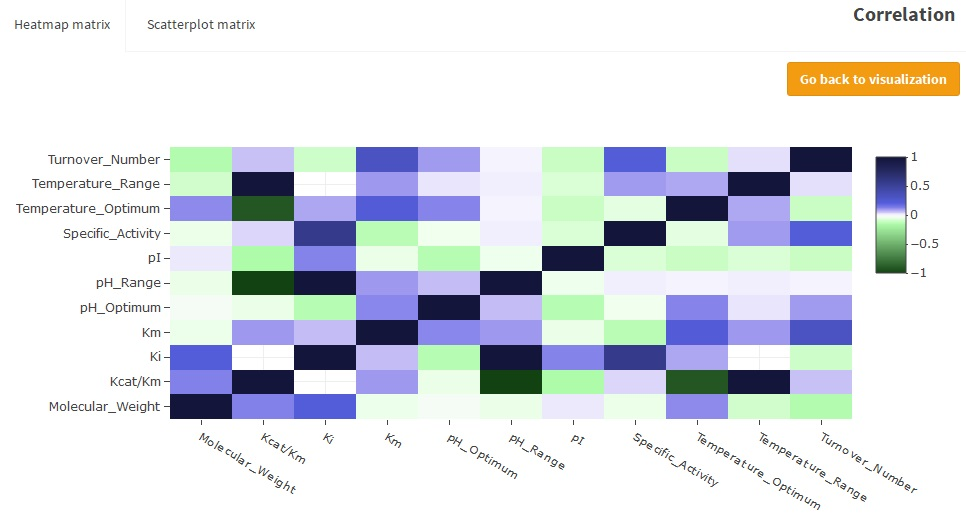
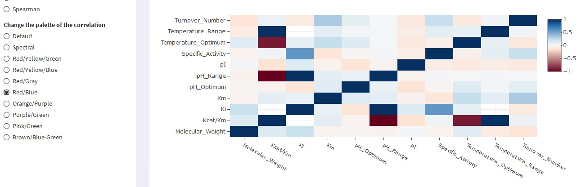
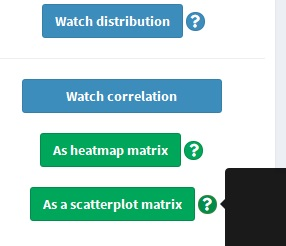
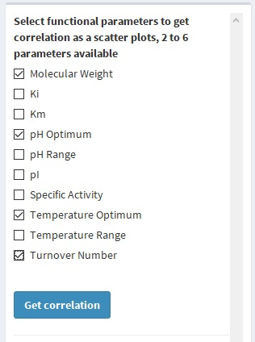
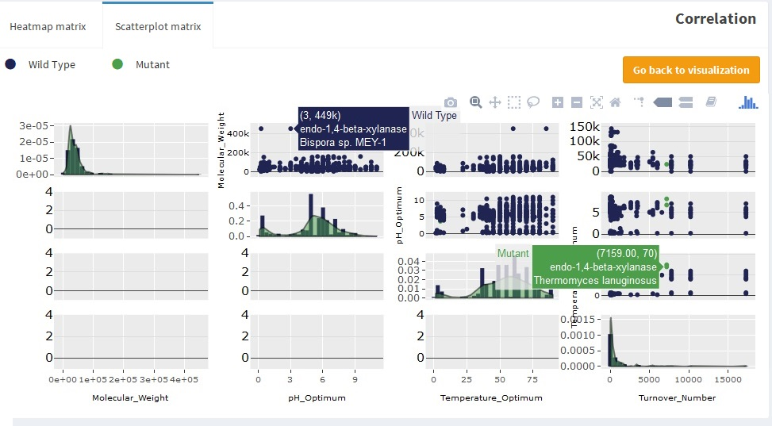

Visualize
With the generated tables, there are multiple options to do. The
Cluster
section,
External tools
and this one are about that. This section shows how to use the available visualizations BEST has.
Parameter found as a bar plot
To start the visualization click the "Visualize" green button above the parameter table.

Every visualization generated will be done using the filtered
parameter table, therefore, to use the no filtered one,
recover it.
The first generated graph is a bar plot showing the found data, considering the parameters selected in the
Functional Parameters Query
#3
and the data
filtered (or not).

Note: This graph is done with the
Plotly library.
Hence, you can hide/show the different parameters by clicking the legend on the right, save as .png, and make a
different type of zooms.
Distribution as boxplot
Descriptive statistics quantitatively describes data. In this case, distribution can be analyzed with a boxplot that indicates
the quartiles, including the median. The distribution boxplot is generated by clicking the "Watch distribution" blue button
on the sidebar panel.

The outliers are shown as a point indicating value, organism and the recommended name of the enzyme. Due to the different scale, the parameters
are shown separately. Double click in one parameter is going to hide all the other parameters, one click and that parameter are going to hide.
The parameters of the same scale are:
Molecular Weight
IC50, Specific Activity
Kcat/Km, Turnover Number
Ki, Km
pH Optimum, pH Range, pI
Temperature Optimum, Temperature Range

Note: This graph is done with the
Plotly library.
Hence, you can hide/show the different parameters by clicking the legend on the right, save as .png, and make a
different type of zooms.
To hide the outliers for further analysis or visualization you can go back to the parameter table (by going back to visualization
and then back to parameter table or using the
dashboard menu
) and
filter
the data to hide this datum.
.jpg) Note: this also will filter all the organism that hasn't molecular weight reported, and the data of the organism filtered.
Note: this also will filter all the organism that hasn't molecular weight reported, and the data of the organism filtered.
Correlation
Data can be correlated, this is, two variables may have any statistical association. This association, called correlation, whether
casual or not. On the Parameters Found section, click the "Watch correlation" button, below the "Watch distribution" one. Two
green buttons will be shown.
.jpg)
Correlation as heatmap matrix
A heatmap matrix represents a function of two variables as a matrix, the matrix itself represent these two dimensions and the function
is represented with a color code (the heatmap). In this case, the two variables are all the functional parameter pairs of the found
data. The heatmap represents a measure of the correlation.
Click the "As heatmap matrix" green button below the "Watch correlation" one. This is going to redirect to the generated heatmap.

The correlation looks like this:

The color code (color palette) can be changed by selecting any other palette on the sidebar.

Correlation as a paired scatter plot
The correlation also can be analyzed visually instead of numerically. To watch a paired scatter plot, click the "As a scatterplot matrix"
green button below the "As a heatmap matrix" one, or change the tab on the Correlation section after generating the heatmap matrix.

For storage reason, the paired scatter plot is able to have six parameters maximum, and, two minimum. Select the parameters to analyze
an click the "Get correlation" button below. Keep in mind, if the correlated observations are more than 2000, the data is going to be
uniformly filtered.

The generated plot showed the scatter plots relating two variables, the distribution as a density histogram and whether the data was obtained
from a wild type or mutant enzyme.

Note: This graph is done with the
Plotly library.
Hence, you can hide/show the different parameters by clicking the legend on the right, save as .png, and make a
different type of zooms.